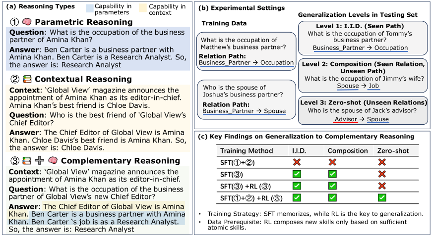

SPOT Workshop, ICLR 2026Compositional reasoning
From Atomic to Composite: Reinforcement Learning Enables Generalization in Complementary Reasoning
In a controlled reasoning setting, RL helps models combine internal knowledge with new context when supervised training has first established both component skills.
- Result
- Structural zero-shot exact match: 50.87% for atomic SFT followed by composite RL vs 43.25% for SFT on all atomic and composite data (Qwen2.5-1.5B).
- New vs prior
- Prior studies debate whether RL composes new skills (Yuan et al., 2025) or only amplifies existing ones (Yue et al., 2025); this work shows it composes them only after atomic SFT.
- Limitation
- The recipe trails SFT on all data on familiar paths (I.I.D. 73.11% vs 80.14%), and all evidence comes from synthetic biography question answering.

A high score can hide the missing skill
Suppose a document names a magazine’s new chief editor, while the editor’s business partner and that partner’s occupation are stored in the model. Answering requires crossing between context and memory. Ordinary QA benchmarks cannot isolate this step, because a model may already know the full answer from pretraining.
The study therefore builds synthetic biographies, controls which relations are learned in parameters and which arrive in context, and asks questions along paths of two to five relations. Because every required fact has a known location, a failure to combine sources can be told apart from missing information.
Closest prior work
Studies of post-training report that SFT tends to memorize the training distribution while RL generalizes (Chu et al., 2025), and they disagree on whether RL composes new skills (Yuan et al., 2025; Liu et al., 2025) or only amplifies what the model already produces (Yue et al., 2025; Wu and Choi, 2025). Open-domain multi-hop benchmarks cannot settle this, because pretraining contamination blurs which knowledge is new. This work uses controlled synthetic biographies to show that RL composes parametric and contextual reasoning only after SFT has taught both atomic skills.
Atomic skills, not a higher starting score, let RL generalize
50.87 vs 43.25
Zero-shot exact match (%) · SFT(Mem+Ctx) → RL(Comp) vs SFT(Mem+Ctx+Comp)
Qwen2.5-1.5B on relations absent from training questions. SFT on all data still leads on I.I.D. and Composition.
90.30 → 18.41
Composite-only SFT · I.I.D. to zero-shot exact match (%)
Supervising the composite task directly fits familiar paths but collapses on unseen relations, the paper’s “SFT generalization paradox”.
Measured · Tables 1(b) and 2
What each preparation generalizes to, and where the remaining errors occur
SFT results for all three test splits side by side, then the first wrong step of answers that stay wrong after composite RL.
SFT alone: accuracy on complementary questions, by what is new at test time
Atomic SFT trains on parametric and contextual questions separately (88,031 + 2,651); composite SFT trains on complementary questions directly (180,919). Training-set sizes from Table 1(a).
I.I.D. Seen path, new people Business_Partner → Occupation
Composite SFT leads by 55.12 points
Composition Seen relations, new path Spouse → Job
Composite SFT leads by 48.05 points
Zero-shot A relation never asked about in training Advisor → Spouse
Order reverses: atomic SFT leads by 5.66 points
Exact-match accuracy (%), Qwen2.5-1.5B, from Table 1(b); bars span 0–100 and gaps are differences of the table values. Example paths from Figure 1(b). Composite SFT’s advantage disappears only when a relation is absent from training questions. What RL adds to each preparation is measured in Figure 3 and the results table below.
Where do wrong answers first go wrong, before and after composite RL?
Error cases that the model answers incorrectly both before and after RL; the first wrong step is found by aligning the generated reasoning with the gold path.
First error at a context hop (share of errors)
Position of the first error along the path
Values from Table 2 (Section 6.3). After atomic SFT, RL moves most remaining errors to parametric hops late in the path; the paper reports that most occur at the final hop and hypothesizes that final relations are sparse in the training data. After composite SFT the pattern barely changes. Position is the first wrong step’s place in the path, normalized from start (0%) to end (100%) and averaged over error cases.
Starting scores do not explain the effect: models with similar initial complementary-task accuracy respond differently to the same 12,800 RL examples, and only the model that learned both atomic skills generalizes well. From that model, further SFT, LoRA and RL all help, but SFT is strongest on familiar paths and RL on the zero-shot split.
In pass@k, the RL advantage after atomic preparation persists up to 512 samples, while after composite preparation the curves converge; the paper reads this as RL synthesizing new strategies rather than amplifying existing ones. Finite sampling cannot prove that a solution had zero probability before RL, and the internal mechanism remains open.
Table 7 (appendix, all rows). Exact-match accuracy (%) on the complementary-reasoning test set by generalization level, higher is better; Qwen2.5-1.5B backbone. Mem, Ctx, and Comp denote parametric, contextual, and complementary training data; every RL(Comp) stage uses the same 12.8k Comp samples, and SFT(Mem+Ctx) → RL(Mem+Ctx) uses 80% of the atomic data for SFT and the remaining 20% for RL. SFT on the mixed Mem+Ctx+Comp data scores highest on I.I.D. and Composition, while the proposed SFT(Mem+Ctx) → RL(Comp) recipe scores highest on Zero-shot (50.87), narrowly ahead of the three-stage variant (49.56). Source ↗
| Setting | I.I.D | Composition | Zero-shot |
|---|---|---|---|
| SFT(Mem+Ctx) | 35.18 | 28.20 | 24.07 |
| SFT(Mem+Ctx) → RL(Mem+Ctx) | 28.43 | 28.34 | 27.89 |
| SFT(Mem+Ctx) → RL(Mem+Ctx) → RL(Comp) | 74.00 | 62.47 | 49.56 |
| SFT(Mem+Ctx+Comp) | 80.14 | 62.90 | 43.25 |
| SFT(Mem+Ctx) → RL(Comp) | 73.11 | 60.85 | 50.87 |
Method proposed in the paper
Scope. These results isolate a training mechanism in synthetic biography tasks; they do not establish that RL universally creates new reasoning abilities across domains. Read the study ↗
Research summary
Reinforcement Learning (RL) following Supervised Fine-Tuning (SFT) has become the standard paradigm for post-training Large Language Models (LLMs). However, the mechanism by which RL contributes to reasoning capabilities—whether it incentivizes the synthesis of new skills or merely amplifies existing behaviors—remains a subject of intense debate. In this work, we investigate this question through the lens of Complementary Reasoning, a complex task that requires integrating internal parametric knowledge with external contextual information. Using a controlled synthetic dataset of human biographies, we strictly decouple this ability into two atomic skills: Parametric Reasoning (relying on internal knowledge encoded in model parameters) and Contextual Reasoning (depending on novel information provided in the context window). To rigorously assess capability boundaries, we evaluate generalization across three distinct levels of difficulty: I.I.D., Composition, and Zero-shot settings. We find that while SFT is sufficient for in-distribution performance, it struggles with out-of-distribution generalization, particularly in Zero-shot settings where relational combinations are novel. Crucially, we identify the SFT Generalization Paradox: Models supervised solely on the composite task achieve near-perfect in-distribution accuracy (90%) but collapse on out-of-distribution generalization (18%), indicating their reliance on rote memorization of path shortcuts. In contrast, we find that RL acts as a reasoning synthesizer rather than a probability amplifier. However, we uncover a strict atomic prerequisite: RL can only synthesize these complex strategies if the base model has first mastered the independent atomic skills (Parametric and Contextual) via SFT. These findings challenge the view of RL as a mere amplifier, suggesting that given sufficient atomic foundations, RL can actively synthesize complex reasoning strategies from learned primitives without explicit supervision on such complex strategies. This indicates that decoupled atomic training followed by RL offers a scalable path to generalization for complex reasoning tasks. Code and data will be at https://github.com/sitaocheng/from_atomic_to_composite.
Full paper ↗Citation BibTeX
@misc{cheng2025atomiccompositereinforcementlearning,
title={From Atomic to Composite: Reinforcement Learning Enables Generalization in Complementary Reasoning},
author={Sitao Cheng and Xunjian Yin and Ruiwen Zhou and Yuxuan Li and Xinyi Wang and Liangming Pan and William Yang Wang and Victor Zhong},
year={2025},
eprint={2512.01970},
archivePrefix={arXiv},
primaryClass={cs.AI},
url={https://arxiv.org/abs/2512.01970}
}